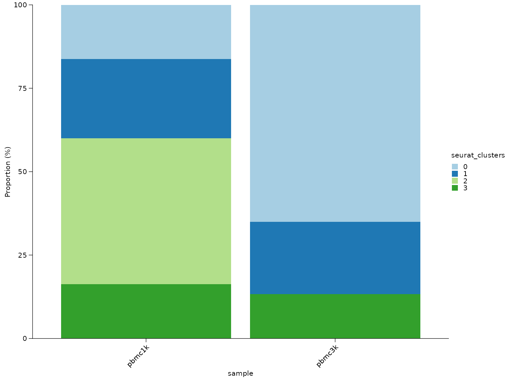
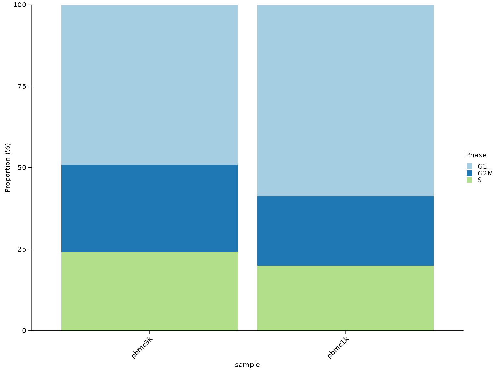
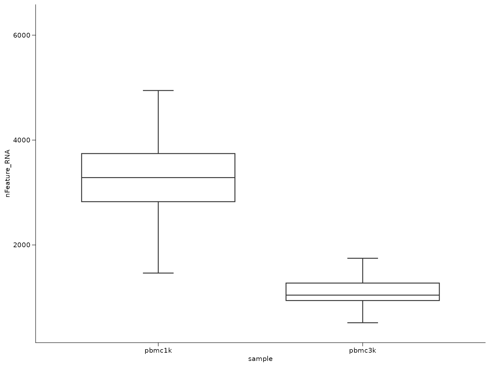
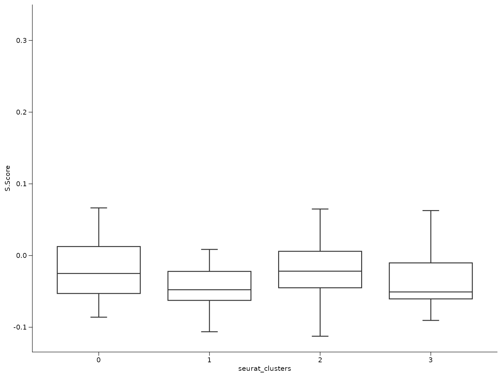

Composition and comparative analysis workflow
Songqi Duan
duan@songqi.org Source:vignettes/composition-analysis.Rmd
composition-analysis.RmdThis workflow covers the analysis tasks that happen after clusters or cell types already exist and the main question becomes comparative rather than structural:
- how cell states are distributed across samples
- whether cluster proportions shift between groups
- how QC or score columns differ across categories
library(Shennong)
library(dplyr)
library(knitr)
library(Seurat)
if (!exists("pbmc_small", inherits = FALSE)) {
try(data("pbmc_small", package = "Shennong", envir = environment()), silent = TRUE)
}
if (!exists("pbmc_small", inherits = FALSE) && file.exists(file.path("data", "pbmc_small.rda"))) {
load(file.path("data", "pbmc_small.rda"))
}1. Summarize cell-state proportions
sn_calculate_composition() is the main helper for
grouped proportion summaries. The most common pattern is
sample-by-cluster composition. When you need a nested summary such as
phase proportions within each cell type inside each sample, pass
multiple grouping columns.
knitr::kable(composition_tbl, digits = 2)| sample | seurat_clusters | proportion |
|---|---|---|
| pbmc1k | 0 | 16.25 |
| pbmc1k | 1 | 23.75 |
| pbmc1k | 2 | 43.75 |
| pbmc1k | 3 | 16.25 |
| pbmc3k | 0 | 65.00 |
| pbmc3k | 1 | 21.67 |
| pbmc3k | 3 | 13.33 |
2. Plot proportions across groups
The returned composition table can be plotted directly with
sn_plot_composition(). It automatically uses the
proportion column when present and can order the x-axis by
one fill category.
sn_plot_composition(
composition_tbl,
x = sample,
fill = seurat_clusters
)
When ordering matters, request it during composition summarization or at plot time. This is useful for comparisons such as mutation fractions across cell types.
phase_tbl_ordered <- sn_calculate_composition(
seu,
group_by = "sample",
variable = "Phase",
min_cells = 10,
sort_by = "proportion",
sort_value = "G1"
)
sn_plot_composition(
phase_tbl_ordered,
x = sample,
fill = Phase
)
3. Compare categorical structure beyond clusters
The same composition helper also works for cell-cycle phase, annotation labels, or any other metadata column.
knitr::kable(phase_tbl, digits = 2)| sample | cell_type | Phase | count | group_total | proportion |
|---|---|---|---|---|---|
| pbmc1k | cluster_0 | G1 | 6 | 13 | 46.15 |
| pbmc1k | cluster_0 | G2M | 3 | 13 | 23.08 |
| pbmc1k | cluster_0 | S | 4 | 13 | 30.77 |
| pbmc1k | cluster_1 | G1 | 15 | 19 | 78.95 |
| pbmc1k | cluster_1 | G2M | 4 | 19 | 21.05 |
| pbmc1k | cluster_2 | G1 | 19 | 35 | 54.29 |
| pbmc1k | cluster_2 | G2M | 7 | 35 | 20.00 |
| pbmc1k | cluster_2 | S | 9 | 35 | 25.71 |
| pbmc1k | cluster_3 | G1 | 7 | 13 | 53.85 |
| pbmc1k | cluster_3 | G2M | 3 | 13 | 23.08 |
| pbmc1k | cluster_3 | S | 3 | 13 | 23.08 |
| pbmc3k | cluster_0 | G1 | 39 | 78 | 50.00 |
| pbmc3k | cluster_0 | G2M | 18 | 78 | 23.08 |
| pbmc3k | cluster_0 | S | 21 | 78 | 26.92 |
| pbmc3k | cluster_1 | G1 | 13 | 26 | 50.00 |
| pbmc3k | cluster_1 | G2M | 9 | 26 | 34.62 |
| pbmc3k | cluster_1 | S | 4 | 26 | 15.38 |
| pbmc3k | cluster_3 | G1 | 7 | 16 | 43.75 |
| pbmc3k | cluster_3 | G2M | 5 | 16 | 31.25 |
| pbmc3k | cluster_3 | S | 4 | 16 | 25.00 |
4. Compare composition shifts between groups
When replicate samples are available, compare sample-level
proportions instead of pooling all cells together.
sn_compare_composition() computes per-sample composition
first, then reports group means, differences, log2 fold changes, and
optional Wilcoxon statistics.
composition_comparison <- sn_compare_composition(
seu,
sample_col = "sample",
group_col = "study",
variable = "seurat_clusters",
contrast = c("pbmc3k", "pbmc1k"),
min_cells = 10,
test = "none"
)
knitr::kable(composition_comparison, digits = 2)| seurat_clusters | mean_case | mean_control | median_case | median_control | difference | log2_fc | n_case | n_control | p_value | contrast_case | contrast_control | change | p_adj |
|---|---|---|---|---|---|---|---|---|---|---|---|---|---|
| 0 | 65.00 | 16.25 | 65.00 | 16.25 | 48.75 | 1.97 | 1 | 1 | NA | pbmc3k | pbmc1k | Increase | NA |
| 1 | 21.67 | 23.75 | 21.67 | 23.75 | -2.08 | -0.13 | 1 | 1 | NA | pbmc3k | pbmc1k | Decrease | NA |
| 2 | 0.00 | 43.75 | 0.00 | 43.75 | -43.75 | -6.47 | 1 | 1 | NA | pbmc3k | pbmc1k | Decrease | NA |
| 3 | 13.33 | 16.25 | 13.33 | 16.25 | -2.92 | -0.28 | 1 | 1 | NA | pbmc3k | pbmc1k | Decrease | NA |
5. Test neighborhood abundance shifts with miloR
When the question is not just “does this label’s global proportion
change?” but “which local transcriptional neighborhoods expand or
contract between sample groups?”, use sn_run_milo(). This
is especially useful when abundance shifts cut across coarse cluster
labels.
milo_tbl <- sn_run_milo(
seu,
sample_col = "sample",
group_col = "study",
contrast = c("pbmc3k", "pbmc1k"),
reduction = "pca",
dims = 1:20,
annotation_col = "seurat_clusters"
)
head(milo_tbl)6. Compare continuous scores across groups
Once a grouped table exists, Shennong’s plotting helpers can summarize how QC or score columns differ by sample or cluster.
sn_plot_boxplot(score_tbl, x = sample, y = nFeature_RNA)
sn_plot_boxplot(score_tbl, x = seurat_clusters, y = S.Score)
7. Keep comparative analysis downstream of stable labels
Composition and grouped-score analysis become much more interpretable once the labels are stable. In practice the recommended order is:
- preprocessing and QC
- clustering or integration
- marker or reference-based annotation
- composition and grouped comparisons
That order reduces the chance of over-interpreting composition shifts that are actually caused by unstable clustering.